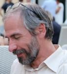

Luca Mari
This is Luca Mari's personal website.
(MS in physics, University of Milano, Italy, 1987; Ph.D. in measurement science, Polytechnic of Torino, Italy, 1994)
Since 2006 a Full Professor of measurement science with Università Carlo Cattaneo - LIUC, Castellanza, Italy, teaching courses on measurement science and statistical data analysis, systems theory, and digital thinking.
Research and dissemination activities in the broad context of information science and technology, from fundamental topics of measurement science to dynamical systems theory and modeling, artificial intelligence, e-learning.
In the international context, an International Electrotechnical Commission (IEC) expert in the WG2 (VIM) of the Joint Committee for Guides in Metrology (JCGM). Former chair of TC1 (Terminology) and secretary of TC25 (Quantities and units) of the IEC, and chair of TC7 (Measurement Science) of the International Measurement Confederation (IMEKO).
In Italy, currently the chair of the Technical Commission UNI-CEI 500 "Metrologia", and former chair of the Technical Committee CEI 1/25 "Terminologia, grandezze e unità" of the Comitato Elettrotecnico Italiano (CEI), and a member of the Technical Committee CEI 085-66
"Strumentazione di misura, di controllo e da laboratorio". Former coordinator of the research area "Metrologia" of the scientific society Gruppo Misure Elettriche ed Elettroniche (GMEE).
Coordinator of the European research project (Horizon 2020) DiDIY, Digital Do It Yourself (Jan 2015-Jun2017, 7 partners, 2 M€).
Former component the Editorial Board of the journal Measurement and of the International Programme Committee of the journal Metrology and Measurement Systems (Polish academy of sciences; Committee of measurement and scientific instrumentation).
Served as scientific reviewer for the journals Acta IMEKO, European Journal for Philosophy of Science, Frontiers in Psychology - Quantitative Psychology and Measurement, IEEE Transaction on Instrumentation & Measurement; Measurement Science and Technology; Measurement; Measurement: Interdisciplinary Research and Perspectives; Measurement Science Review; Metrologia; Metrology and Measurement Systems; NCSLI Measure: The Journal of Measurement Science; Philosophy of Science; Proceedings of the Royal Society A (Mathematical, Physical and Engineering Sciences); Program; Pure and Applied Chemistry; Quality & Quantity; Review of General Psychology.
At LIUC former head of the PhD programme in “Integrated Business Management” (2008-13), head of the Institute “Quantitative Methods” (2005-12), head of the Institute “Technology” (2007-12), head of the Research Group in “Management Science” (2014-15), head of Lab#ID, a laboratory on RFId and IoT Systems (2008-16), and SmartUp, a laboratory on digital manufacturing, including a MakerBot Innovation Center (2014-16).
Currently the cultural director of idea.lab, a laboratory activated by a network of schools in 2017.
Author of about 150 papers published in international journals or in proceedings of peer-reviewed international conferences, editor of 10 special issues of scientific journals or scientific books, author of 9 educational books on information science and technology.
Designer and main developer of STGraph, a software engine for the simulation of dynamical systems, and of the software underlying the "official" HTML versions of the JCGM International Vocabulary of Metrology (VIM) and the OIML International Vocabulary of Legal Metrology (VIML).
ORCID id: 0000-0002-7128-3453 -- Scopus Author ID: 6603599345 -- Google Scholar page -- ResearchGate page